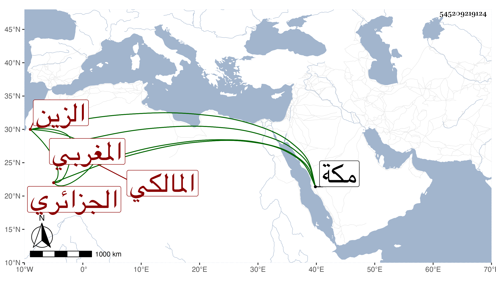

0902Sakhawi.DawLamic.ITO20230111-ara1.EIS1600.545209219124
Biography ID: 545209219124
378
عبد الرحمن بن محمد بن فاضل بن عبد الرحمن الزين الجزائري المغربي المالكي نزيل رباط الموفق من مكة ويعرف بابن فاضل. شيخ فاضل مفنن قطن مكة ولازمني في المجاورة الثانية بها رواية ودراية ، وكان خيرا. مات في ذي القعدة سنة إحدى وثمانين ودفن بمعلاتها ولم يقصر عن السبعين رحمه الله.
